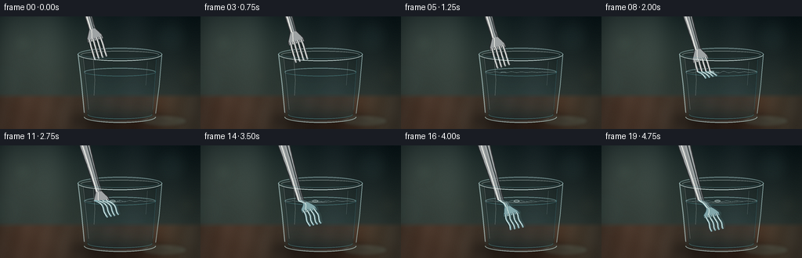
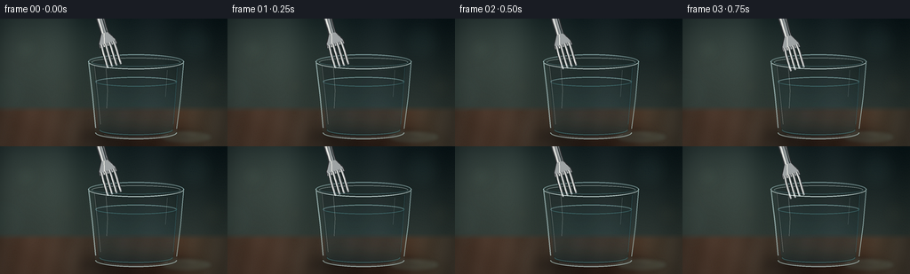

CODING AGENTS AS PIXEL WORLD MODELS
traex/GPT-5.6-Sol · phygen_074
点击播放 · 原生 RGB 像素
逐轮保存的候选
回放视频、检查图与代码变化。
每份候选均可单独播放。实际图片检查记录在下方工具轨迹中。
候选 01播放与检查图
点击播放 · 原生 RGB 像素


展开代码变化
--- 上一保存版本
+++ 本次保存版本
@@ -0,0 +1,312 @@
+from pathlib import Path
+import math
+import numpy as np
+from PIL import Image, ImageDraw, ImageFilter, ImageEnhance
+import cv2
+import artifact_io
+
+# Procedural, supersampled cinematic macro scene.
+W, H, N = 256, 144, 20
+S = 4
+WW, HH = W*S, H*S
+YS = 71.0
+GLASS_CX = 153.0
+
+
+def sc(v):
+ return int(round(v*S))
+
+
+def pts(seq):
+ return [(sc(x), sc(y)) for x, y in seq]
+
+
+def smoothstep(x):
+ x = max(0.0, min(1.0, x))
+ return x*x*(3.0-2.0*x)
+
+
+def make_background():
+ yy, xx = np.mgrid[0:HH, 0:WW].astype(np.float32)
+ x = xx/S; y = yy/S
+ top = np.array([14, 27, 30.], np.float32)
+ bottom = np.array([52, 62, 57.], np.float32)
+ v = np.clip(y/112., 0, 1)[...,None]
+ arr = top*(1-v) + bottom*v
+ # soft window light from upper left
+ glow = np.exp(-(((x-43)/72)**2 + ((y-24)/62)**2))[...,None]
+ arr += glow*np.array([34, 36, 30.])
+ # distant vertical interior forms
+ arr += (4*np.sin(x/22.) + 2*np.sin(x/8.4))[...,None]
+ # tabletop and a feathered horizon
+ table = np.stack([72 + 9*np.sin(x/24), 55 + 5*np.sin(x/28), 43 + 4*np.sin(x/31)], axis=-1)
+ blend = np.clip((y-98)/7, 0, 1)[...,None]
+ arr = arr*(1-blend) + table*blend
+ # subtle wood grain
+ grain = (2.0*np.sin(x*.24 + y*.055) + 1.2*np.sin(x*.07-y*.13))[...,None]
+ arr += grain*blend
+ # vignette
+ vig = 1 - .20*np.clip(((x-128)/150)**2 + ((y-72)/105)**2,0,1)[...,None]
+ arr *= vig
+ return Image.fromarray(np.uint8(np.clip(arr,0,255)), 'RGB').convert('RGBA')
+
+
+def bokeh_layer():
+ layer = Image.new('RGBA',(WW,HH),(0,0,0,0))
+ d = ImageDraw.Draw(layer)
+ circles = [(29,34,14,(117,143,119,19)),(218,27,21,(88,129,123,16)),
+ (76,76,10,(169,145,91,13)),(239,76,13,(175,151,101,11)),
+ (9,83,24,(70,111,106,12))]
+ for x,y,r,c in circles:
+ d.ellipse((sc(x-r),sc(y-r),sc(x+r),sc(y+r)),fill=c)
+ return layer.filter(ImageFilter.GaussianBlur(sc(7)))
+
+BASE = make_background()
+BOKEH = bokeh_layer()
+
+
+def glass_masks():
+ outer = Image.new('L',(WW,HH),0); d=ImageDraw.Draw(outer)
+ d.polygon(pts([(99,48),(207,48),(199,127),(191,133),(115,133),(107,127)]),fill=255)
+ d.ellipse((sc(99),sc(40),sc(207),sc(57)),fill=255)
+ d.ellipse((sc(107),sc(122),sc(199),sc(136)),fill=255)
+ inner = Image.new('L',(WW,HH),0); d=ImageDraw.Draw(inner)
+ d.polygon(pts([(105,49),(201,49),(195,124),(189,129),(117,129),(111,124)]),fill=255)
+ d.ellipse((sc(105),sc(43),sc(201),sc(55)),fill=255)
+ d.ellipse((sc(111),sc(119),sc(195),sc(132)),fill=255)
+ water = Image.new('L',(WW,HH),0); d=ImageDraw.Draw(water)
+ d.polygon(pts([(107,71),(199,71),(195,123),(190,128),(116,128),(111,123)]),fill=255)
+ d.ellipse((sc(107),sc(65.5),sc(199),sc(76.5)),fill=255)
+ d.ellipse((sc(111),sc(119),sc(195),sc(132)),fill=255)
+ return outer,inner,water
+
+OUTER_MASK, INNER_MASK, WATER_MASK = glass_masks()
+
+
+def add_shadow(im):
+ sh=Image.new('RGBA',(WW,HH),(0,0,0,0)); d=ImageDraw.Draw(sh)
+ d.ellipse((sc(89),sc(122),sc(220),sc(145)),fill=(0,0,0,112))
+ sh=sh.filter(ImageFilter.GaussianBlur(sc(7)))
+ return Image.alpha_composite(im,sh)
+
+
+def distort_inside(im, frame):
+ arr=np.array(im.convert('RGB'))
+ yy,xx=np.mgrid[0:HH,0:WW].astype(np.float32)
+ xb=xx/S; yb=yy/S
+ # cylindrical clear-glass lens and a faint moving water shimmer
+ depth=np.clip((yb-YS)/55,0,1)
+ ripple=0.55*np.sin((yb-YS)*.29 + frame*.37)*depth
+ srcx=(GLASS_CX + (xb-GLASS_CX)*1.055 + ripple)*S
+ srcy=(yb + .45*np.sin((xb-105)*.13+frame*.22)*depth)*S
+ warped=cv2.remap(arr,srcx.astype(np.float32),srcy.astype(np.float32),cv2.INTER_LINEAR,borderMode=cv2.BORDER_REFLECT)
+ warped=Image.fromarray(warped,'RGB').convert('RGBA')
+ mask=np.array(INNER_MASK,dtype=np.float32)
+ alpha=Image.fromarray(np.uint8(mask*.24),'L')
+ im.alpha_composite(Image.composite(warped,Image.new('RGBA',(WW,HH),(0,0,0,0)),alpha))
+ return im
+
+
+def draw_glass_back(im, frame):
+ # almost colorless glass body
+ body=Image.new('RGBA',(WW,HH),(0,0,0,0))
+ body.putalpha(OUTER_MASK.point(lambda p: int(p*.045)))
+ tint=Image.new('RGBA',(WW,HH),(110,181,188,0)); tint.putalpha(OUTER_MASK.point(lambda p:int(p*.04)))
+ im=Image.alpha_composite(im,tint)
+
+ # clean water volume with a very gentle cyan depth gradient
+ wm=np.array(WATER_MASK,dtype=np.float32)/255
+ yy=np.arange(HH,dtype=np.float32)[:,None]/S
+ a=(10 + 26*np.clip((yy-YS)/60,0,1))*wm
+ rgba=np.zeros((HH,WW,4),np.uint8)
+ rgba[...,0]=44; rgba[...,1]=124; rgba[...,2]=139; rgba[...,3]=np.uint8(a)
+ im=Image.alpha_composite(im,Image.fromarray(rgba,'RGBA'))
+
+ # back half of rim and water surface
+ l=Image.new('RGBA',(WW,HH),(0,0,0,0)); d=ImageDraw.Draw(l)
+ d.arc((sc(99),sc(40),sc(207),sc(57)),180,360,fill=(187,226,226,115),width=sc(1.2))
+ d.arc((sc(103),sc(44),sc(203),sc(54)),180,360,fill=(238,253,249,112),width=sc(.7))
+ d.ellipse((sc(107),sc(65.5),sc(199),sc(76.5)),outline=(103,187,193,80),width=sc(.9))
+ d.arc((sc(108),sc(66),sc(198),sc(76)),183,357,fill=(213,246,243,112),width=sc(.65))
+ return Image.alpha_composite(im,l)
+
+
+def fork_layer(tip, frame, refracted=False, ghost=False):
+ layer=Image.new('RGBA',(WW,HH),(0,0,0,0)); d=ImageDraw.Draw(layer)
+ back=np.array([-0.285,-0.959],dtype=float)
+ side=np.array([0.959,-0.285],dtype=float)
+ contact=max(0.0, min(1.0,(tip[1]-YS)/32.0))
+
+ def P(s,l=0):
+ p=np.array(tip,dtype=float)+back*s+side*l
+ if refracted and p[1]>YS:
+ dep=p[1]-YS
+ # abrupt-but-continuous Snell-like apparent displacement at interface
+ sh=(7.0*(1-math.exp(-dep/3.2)) + .72*math.sin(dep*.31+frame*.48)*contact)
+ p[0]+=sh
+ p[1]=YS+dep*.76
+ return (float(p[0]),float(p[1]))
+ def line(worldpts, fill, width):
+ d.line(pts(worldpts),fill=fill,width=max(1,sc(width)),joint='curve')
+ def polygon(worldpts,fill):
+ d.polygon(pts(worldpts),fill=fill)
+
+ if ghost:
+ colors=((75,164,172,60),(184,235,235,42),(224,255,252,34))
+ elif refracted:
+ colors=((39,64,68,245),(133,170,174,248),(231,246,241,238))
+ else:
+ colors=((45,48,50,255),(159,164,165,255),(246,246,239,255))
+ dark, metal, hi=colors
+
+ # Variable-width handle, outlined and then metallic inner face.
+ ss=np.linspace(33,155,44)
+ widths=4.6 + 5.4*np.clip((ss-48)/107,0,1)**1.25
+ poly=[P(s,w) for s,w in zip(ss,widths)] + [P(s,-w) for s,w in zip(ss[::-1],widths[::-1])]
+ polygon(poly,dark)
+ iw=np.maximum(widths-1.25,2.7)
+ poly2=[P(s,w) for s,w in zip(ss,iw)] + [P(s,-w) for s,w in zip(ss[::-1],iw[::-1])]
+ polygon(poly2,metal)
+ # brushed steel shadow and highlight bands
+ line([P(s,2.3+1.8*np.clip((s-50)/100,0,1)) for s in ss],(70,78,80,150 if not ghost else 35),1.25)
+ line([P(s,-2.0-2.0*np.clip((s-65)/90,0,1)) for s in ss],hi,1.05)
+ line([P(s,-.2) for s in ss],(207,214,212,100 if not ghost else 25),.55)
+
+ # shoulder/head, where the four tines merge
+ hs=np.linspace(23,38,16)
+ hw=np.interp(hs,[23,28,38],[10.8,10.2,4.6])
+ head=[P(s,w) for s,w in zip(hs,hw)] + [P(s,-w) for s,w in zip(hs[::-1],hw[::-1])]
+ polygon(head,dark)
+ ihw=np.maximum(hw-1.15,3.2)
+ head2=[P(s,w) for s,w in zip(hs,ihw)] + [P(s,-w) for s,w in zip(hs[::-1],ihw[::-1])]
+ polygon(head2,metal)
+ line([P(s,-4.0*np.clip((38-s)/15,0,1)-.7) for s in hs],hi,.85)
+
+ # Four unmistakable separated polished prongs.
+ tine_l=[-7.65,-2.55,2.55,7.65]
+ for j,lat in enumerate(tine_l):
+ ts=np.linspace(0,26.2,18)
+ # very slight convergence into the shoulder
+ centers=[P(s,lat*(1-.08*np.clip((s-18)/8.2,0,1))) for s in ts]
+ line(centers,dark,3.05)
+ line(centers,metal,2.12)
+ # crisp specular edge, alternates subtly by tine
+ hpts=[P(s,lat*(1-.08*np.clip((s-18)/8.2,0,1))-.48) for s in ts]
+ line(hpts,hi,.63)
+ # rounded tips
+ cx,cy=P(0,lat)
+ r=sc(1.0)
+ d.ellipse((sc(cx)-r,sc(cy)-r,sc(cx)+r,sc(cy)+r),fill=metal)
+
+ if ghost:
+ layer=layer.filter(ImageFilter.GaussianBlur(sc(1.15)))
+ return layer
+
+
+def apply_mask(layer, mask):
+ a=np.array(layer.getchannel('A'),dtype=np.uint16)
+ m=np.array(mask,dtype=np.uint16)
+ layer.putalpha(Image.fromarray(np.uint8((a*m)//255),'L'))
+ return layer
+
+
+def surface_and_front(im, frame, tip, contact_age):
+ layer=Image.new('RGBA',(WW,HH),(0,0,0,0)); d=ImageDraw.Draw(layer)
+ # fine moving waterline deformation around entry point
+ if contact_age>=0:
+ age=contact_age
+ amp=2.3*math.exp(-age/14)
+ cx=tip[0] + (7*(1-math.exp(-max(tip[1]-YS,0)/3.2)) if tip[1]>YS else 0)
+ wave=[]
+ for x in np.linspace(108,198,110):
+ dist=abs(x-cx)
+ env=math.exp(-dist/29)*min(1,age/2+0.2)
+ y=YS + amp*env*math.sin(dist*.48-age*.95)
+ wave.append((x,y))
+ d.line(pts(wave),fill=(211,246,243,115),width=sc(.55))
+ # expanding elliptical ripple rings, seen nearly edge-on
+ for k in range(3):
+ rr=3.5+age*2.15-k*7.2
+ if rr>1 and rr<44:
+ alpha=int(115*(1-rr/48)*math.exp(-k*.18))
+ d.arc((sc(cx-rr),sc(YS-rr*.105),sc(cx+rr),sc(YS+rr*.105)),3,177,
+ fill=(226,253,250,alpha),width=sc(.7))
+ d.arc((sc(cx-rr),sc(YS-rr*.105),sc(cx+rr),sc(YS+rr*.105)),183,357,
+ fill=(73,145,154,max(20,alpha//2)),width=sc(.55))
+ # bright meniscus clinging to metal
+ if tip[1]>YS:
+ d.ellipse((sc(cx-3.7),sc(YS-1.2),sc(cx+3.7),sc(YS+1.3)),outline=(238,255,251,175),width=sc(.75))
+
+ # foreground glass contours and sharp optical highlights
+ d.arc((sc(99),sc(40),sc(207),sc(57)),0,180,fill=(229,250,247,185),width=sc(1.0))
+ d.arc((sc(103),sc(44),sc(203),sc(54)),0,180,fill=(111,174,181,95),width=sc(.7))
+ d.line(pts([(99.6,48),(104,86),(107.5,123)]),fill=(214,245,244,135),width=sc(1.15))
+ d.line(pts([(106,53),(110,89),(113,119)]),fill=(255,255,249,75),width=sc(.55))
+ d.line(pts([(206.4,48),(203,89),(198.5,124)]),fill=(203,240,238,132),width=sc(1.05))
+ d.line(pts([(199.5,55),(197,92),(194.8,119)]),fill=(66,128,139,80),width=sc(.65))
+ # bottom heavy glass and refracted bright arcs
+ d.arc((sc(107),sc(121),sc(199),sc(136)),0,180,fill=(217,247,244,140),width=sc(1.25))
+ d.arc((sc(112),sc(120),sc(194),sc(131)),0,180,fill=(100,183,187,108),width=sc(.75))
+ d.arc((sc(116),sc(125),sc(190),sc(134)),15,165,fill=(247,255,248,70),width=sc(.55))
+ # narrow streak reflections
+ d.line(pts([(119,54),(121,81),(120,101)]),fill=(248,255,250,55),width=sc(.7))
+ d.line(pts([(188,58),(186,88)]),fill=(238,255,253,45),width=sc(.55))
+ return Image.alpha_composite(im,layer)
+
+
+def render_frame(i):
+ im=Image.alpha_composite(BASE.copy(),BOKEH)
+ im=add_shadow(im)
+ # soft caustic on table
+ ca=Image.new('RGBA',(WW,HH),(0,0,0,0)); cd=ImageDraw.Draw(ca)
+ cd.ellipse((sc(180),sc(126),sc(239),sc(141)),fill=(146,205,190,30))
+ cd.arc((sc(132),sc(125),sc(222),sc(143)),192,342,fill=(223,244,219,65),width=sc(1))
+ ca=ca.filter(ImageFilter.GaussianBlur(sc(2.2)))
+ im=Image.alpha_composite(im,ca)
+
+ im=distort_inside(im,i)
+ im=draw_glass_back(im,i)
+
+ # Smooth deliberate lowering; almost still after immersion.
+ p=smoothstep((i-.5)/17.5)
+ tip=(128.5+12.5*p, 52.5+66.5*p)
+ contact_frame=4.7
+ contact_age=i-contact_frame
+
+ # Above-water fork: geometrically straight, crisp silver.
+ above_mask=Image.new('L',(WW,HH),0); md=ImageDraw.Draw(above_mask)
+ md.rectangle((0,0,WW,sc(YS+.55)),fill=255)
+ above=apply_mask(fork_layer(tip,i,False,False),above_mask)
+ im=Image.alpha_composite(im,above)
+
+ # A faint secondary underwater image plus the stronger refracted fork.
+ under_region=Image.new('L',(WW,HH),0)
+ um=np.array(WATER_MASK,dtype=np.uint8)
+ um[:sc(YS-1),:]=0
+ under_region=Image.fromarray(um,'L')
+ ghost=fork_layer((tip[0]+2.2,tip[1]),i,True,True)
+ ghost=apply_mask(ghost,under_region)
+ im=Image.alpha_composite(im,ghost)
+ under=apply_mask(fork_layer(tip,i,True,False),under_region)
+ im=Image.alpha_composite(im,under)
+
+ # Water surface sits optically in front of the submerged metal; front glass last.
+ im=surface_and_front(im,i,tip,contact_age)
+
+ # restrained film grain, deterministic, followed by downsampling
+ rgb=np.array(im.convert('RGB'),dtype=np.int16)
+ rng=np.random.default_rng(7400+i)
+ grain=rng.normal(0,.65,(HH,WW,1))
+ rgb=np.uint8(np.clip(rgb+grain,0,255))
+ out=Image.fromarray(rgb,'RGB').resize((W,H),Image.Resampling.LANCZOS)
+ out=ImageEnhance.Sharpness(out).enhance(1.10)
+ return np.asarray(out,dtype=np.uint8)
+
+
+def main():
+ frames=np.stack([render_frame(i) for i in range(N)],axis=0)
+ artifact_io.save(frames,Path(__file__).resolve().parent)
+ print('saved',frames.shape,frames.dtype)
+
+if __name__=='__main__':
+ main()
可观测工具轨迹
实际执行的命令与返回图片。
命令 1exit 0
/bin/bash -lc "ls -la && printf '\\n--- prompt.txt ---\\n' && cat prompt.txt && printf '\\n--- GENERATION_RULES.md ---\\n' && cat GENERATION_RULES.md && printf '\\n--- task_spec.json ---\\n' && cat task_spec.json"
命令 2exit 0
/bin/bash -lc "find . -maxdepth 2 -type f -printf '%p\\n' | sort"
命令 3exit 0
/bin/bash -lc "sed -n '1,240p' artifact_io.py"
命令 4exit 0
/bin/bash -lc "python - <<'PY'
import PIL, numpy
print('PIL',PIL.__version__,'numpy',numpy.__version__)
try:
import cv2; print('cv2',cv2.__version__)
except Exception as e: print('no cv2',e)
PY"命令 5exit 0
/bin/bash -lc "cat > generate.py <<'PY'
from pathlib import Path
import math
import numpy as np
from PIL import Image, ImageDraw, ImageFilter, ImageEnhance
import cv2
import artifact_io
# Procedural, supersampled cinematic macro scene.
W, H, N = 256, 144, 20
S = 4
WW, HH = W*S, H*S
YS = 71.0
GLASS_CX = 153.0
def sc(v):
return int(round(v*S))
def pts(seq):
return [(sc(x), sc(y)) for x, y in seq]
def smoothstep(x):
x = max(0.0, min(1.0, x))
return x*x*(3.0-2.0*x)
def make_background():
yy, xx = np.mgrid[0:HH, 0:WW].astype(np.float32)
x = xx/S; y = yy/S
top = np.array([14, 27, 30.], np.float32)
bottom = np.array([52, 62, 57.], np.float32)
v = np.clip(y/112., 0, 1)[...,None]
arr = top*(1-v) + bottom*v
# soft window light from upper left
glow = np.exp(-(((x-43)/72)**2 + ((y-24)/62)**2))[...,None]
arr += glow*np.array([34, 36, 30.])
# distant vertical interior forms
arr += (4*np.sin(x/22.) + 2*np.sin(x/8.4))[...,None]
# tabletop and a feathered horizon
table = np.stack([72 + 9*np.sin(x/24), 55 + 5*np.sin(x/28), 43 + 4*np.sin(x/31)], axis=-1)
blend = np.clip((y-98)/7, 0, 1)[...,None]
arr = arr*(1-blend) + table*blend
# subtle wood grain
grain = (2.0*np.sin(x*.24 + y*.055) + 1.2*np.sin(x*.07-y*.13))[...,None]
arr += grain*blend
# vignette
vig = 1 - .20*np.clip(((x-128)/150)**2 + ((y-72)/105)**2,0,1)[...,None]
arr *= vig
return Image.fromarray(np.uint8(np.clip(arr,0,255)), 'RGB').convert('RGBA')
def bokeh_layer():
layer = Image.new('RGBA',(WW,HH),(0,0,0,0))
d = ImageDraw.Draw(layer)
circles = [(29,34,14,(117,143,119,19)),(218,27,21,(88,129,123,16)),
(76,76,10,(169,145,91,13)),(239,76,13,(175,151,101,11)),
(9,83,24,(70,111,106,12))]
for x,y,r,c in circles:
d.ellipse((sc(x-r),sc(y-r),sc(x+r),sc(y+r)),fill=c)
return layer.filter(ImageFilter.GaussianBlur(sc(7)))
BASE = make_background()
BOKEH = bokeh_layer()
def glass_masks():
outer = Image.new('L',(WW,HH),0); d=ImageDraw.Draw(outer)
d.polygon(pts([(99,48),(207,48),(199,127),(191,133),(115,133),(107,127)]),fill=255)
d.ellipse((sc(99),sc(40),sc(207),sc(57)),fill=255)
d.ellipse((sc(107),sc(122),sc(199),sc(136)),fill=255)
inner = Image.new('L',(WW,HH),0); d=ImageDraw.Draw(inner)
d.polygon(pts([(105,49),(201,49),(195,124),(189,129),(117,129),(111,124)]),fill=255)
d.ellipse((sc(105),sc(43),sc(201),sc(55)),fill=255)
d.ellipse((sc(111),sc(119),sc(195),sc(132)),fill=255)
water = Image.new('L',(WW,HH),0); d=ImageDraw.Draw(water)
d.polygon(pts([(107,71),(199,71),(195,123),(190,128),(116,128),(111,123)]),fill=255)
d.ellipse((sc(107),sc(65.5),sc(199),sc(76.5)),fill=255)
d.ellipse((sc(111),sc(119),sc(195),sc(132)),fill=255)
return outer,inner,water
OUTER_MASK, INNER_MASK, WATER_MASK = glass_masks()
def add_shadow(im):
sh=Image.new('RGBA',(WW,HH),(0,0,0,0)); d=ImageDraw.Draw(sh)
d.ellipse((sc(89),sc(122),sc(220),sc(145)),fill=(0,0,0,112))
sh=sh.filter(ImageFilter.GaussianBlur(sc(7)))
return Image.alpha_composite(im,sh)
def distort_inside(im, frame):
arr=np.array(im.convert('RGB'))
yy,xx=np.mgrid[0:HH,0:WW].astype(np.float32)
xb=xx/S; yb=yy/S
# cylindrical clear-glass lens and a faint moving water shimmer
depth=np.clip((yb-YS)/55,0,1)
ripple=0.55*np.sin((yb-YS)*.29 + frame*.37)*depth
srcx=(GLASS_CX + (xb-GLASS_CX)*1.055 + ripple)*S
srcy=(yb + .45*np.sin((xb-105)*.13+frame*.22)*depth)*S
warped=cv2.remap(arr,srcx.astype(np.float32),srcy.astype(np.float32),cv2.INTER_LINEAR,borderMode=cv2.BORDER_REFLECT)
warped=Image.fromarray(warped,'RGB').convert('RGBA')
mask=np.array(INNER_MASK,dtype=np.float32)
alpha=Image.fromarray(np.uint8(mask*.24),'L')
im.alpha_composite(Image.composite(warped,Image.new('RGBA',(WW,HH),(0,0,0,0)),alpha))
return im
def draw_glass_back(im, frame):
# almost colorless glass body
body=Image.new('RGBA',(WW,HH),(0,0,0,0))
body.putalpha(OUTER_MASK.point(lambda p: int(p*.045)))
tint=Image.new('RGBA',(WW,HH),(110,181,188,0)); tint.putalpha(OUTER_MASK.point(lambda p:int(p*.04)))
im=Image.alpha_composite(im,tint)
# clean water volume with a very gentle cyan depth gradient
wm=np.array(WATER_MASK,dtype=np.float32)/255
yy=np.arange(HH,dtype=np.float32)[:,None]/S
a=(10 + 26*np.clip((yy-YS)/60,0,1))*wm
rgba=np.zeros((HH,WW,4),np.uint8)
rgba[...,0]=44; rgba[...,1]=124; rgba[...,2]=139; rgba[...,3]=np.uint8(a)
im=Image.alpha_composite(im,Image.fromarray(rgba,'RGBA'))
# back half of rim and water surface
l=Image.new('RGBA',(WW,HH),(0,0,0,0)); d=ImageDraw.Draw(l)
d.arc((sc(99),sc(40),sc(207),sc(57)),180,360,fill=(187,226,226,115),width=sc(1.2))
d.arc((sc(103),sc(44),sc(203),sc(54)),180,360,fill=(238,253,249,112),width=sc(.7))
d.ellipse((sc(107),sc(65.5),sc(199),sc(76.5)),outline=(103,187,193,80),width=sc(.9))
d.arc((sc(108),sc(66),sc(198),sc(76)),183,357,fill=(213,246,243,112),width=sc(.65))
return Image.alpha_composite(im,l)
def fork_layer(tip, frame, refracted=False, ghost=False):
layer=Image.new('RGBA',(WW,HH),(0,0,0,0)); d=ImageDraw.Draw(layer)
back=np.array([-0.285,-0.959],dtype=float)
side=np.array([0.959,-0.285],dtype=float)
contact=max(0.0, min(1.0,(tip[1]-YS)/32.0))
def P(s,l=0):
p=np.array(tip,dtype=float)+back*s+side*l
if refracted and p[1]>YS:
dep=p[1]-YS
# abrupt-but-continuous Snell-like apparent displacement at interface
sh=(7.0*(1-math.exp(-dep/3.2)) + .72*math.sin(dep*.31+frame*.48)*contact)
p[0]+=sh
p[1]=YS+dep*.76
return (float(p[0]),float(p[1]))
def line(worldpts, fill, width):
d.line(pts(worldpts),fill=fill,width=max(1,sc(width)),joint='curve')
def polygon(worldpts,fill):
d.polygon(pts(worldpts),fill=fill)
if ghost:
colors=((75,164,172,60),(184,235,235,42),(224,255,252,34))
elif refracted:
colors=((39,64,68,245),(133,170,174,248),(231,246,241,238))
else:
colors=((45,48,50,255),(159,164,165,255),(246,246,239,255))
dark, metal, hi=colors
# Variable-width handle, outlined and then metallic inner face.
ss=np.linspace(33,155,44)
widths=4.6 + 5.4*np.clip((ss-48)/107,0,1)**1.25
poly=[P(s,w) for s,w in zip(ss,widths)] + [P(s,-w) for s,w in zip(ss[::-1],widths[::-1])]
polygon(poly,dark)
iw=np.maximum(widths-1.25,2.7)
poly2=[P(s,w) for s,w in zip(ss,iw)] + [P(s,-w) for s,w in zip(ss[::-1],iw[::-1])]
polygon(poly2,metal)
# brushed steel shadow and highlight bands
line([P(s,2.3+1.8*np.clip((s-50)/100,0,1)) for s in ss],(70,78,80,150 if not ghost else 35),1.25)
line([P(s,-2.0-2.0*np.clip((s-65)/90,0,1)) for s in ss],hi,1.05)
line([P(s,-.2) for s in ss],(207,214,212,100 if not ghost else 25),.55)
# shoulder/head, where the four tines merge
hs=np.linspace(23,38,16)
hw=np.interp(hs,[23,28,38],[10.8,10.2,4.6])
head=[P(s,w) for s,w in zip(hs,hw)] + [P(s,-w) for s,w in zip(hs[::-1],hw[::-1])]
polygon(head,dark)
ihw=np.maximum(hw-1.15,3.2)
head2=[P(s,w) for s,w in zip(hs,ihw)] + [P(s,-w) for s,w in zip(hs[::-1],ihw[::-1])]
polygon(head2,metal)
line([P(s,-4.0*np.clip((38-s)/15,0,1)-.7) for s in hs],hi,.85)
# Four unmistakable separated polished prongs.
tine_l=[-7.65,-2.55,2.55,7.65]
for j,lat in enumerate(tine_l):
ts=np.linspace(0,26.2,18)
# very slight convergence into the shoulder
centers=[P(s,lat*(1-.08*np.clip((s-18)/8.2,0,1))) for s in ts]
line(centers,dark,3.05)
line(centers,metal,2.12)
# crisp specular edge, alternates subtly by tine
hpts=[P(s,lat*(1-.08*np.clip((s-18)/8.2,0,1))-.48) for s in ts]
line(hpts,hi,.63)
# rounded tips
cx,cy=P(0,lat)
r=sc(1.0)
d.ellipse((sc(cx)-r,sc(cy)-r,sc(cx)+r,sc(cy)+r),fill=metal)
if ghost:
layer=layer.filter(ImageFilter.GaussianBlur(sc(1.15)))
return layer
def apply_mask(layer, mask):
a=np.array(layer.getchannel('A'),dtype=np.uint16)
m=np.array(mask,dtype=np.uint16)
layer.putalpha(Image.fromarray(np.uint8((a*m)//255),'L'))
return layer
def surface_and_front(im, frame, tip, contact_age):
layer=Image.new('RGBA',(WW,HH),(0,0,0,0)); d=ImageDraw.Draw(layer)
# fine moving waterline deformation around entry point
if contact_age>=0:
age=contact_age
amp=2.3*math.exp(-age/14)
cx=tip[0] + (7*(1-math.exp(-max(tip[1]-YS,0)/3.2)) if tip[1]>YS else 0)
wave=[]
for x in np.linspace(108,198,110):
dist=abs(x-cx)
env=math.exp(-dist/29)*min(1,age/2+0.2)
y=YS + amp*env*math.sin(dist*.48-age*.95)
wave.append((x,y))
d.line(pts(wave),fill=(211,246,243,115),width=sc(.55))
# expanding elliptical ripple rings, seen nearly edge-on
for k in range(3):
rr=3.5+age*2.15-k*7.2
if rr>1 and rr<44:
alpha=int(115*(1-rr/48)*math.exp(-k*.18))
d.arc((sc(cx-rr),sc(YS-rr*.105),sc(cx+rr),sc(YS+rr*.105)),3,177,
fill=(226,253,250,alpha),width=sc(.7))
d.arc((sc(cx-rr),sc(YS-rr*.105),sc(cx+rr),sc(YS+rr*.105)),183,357,
fill=(73,145,154,max(20,alpha//2)),width=sc(.55))
# bright meniscus clinging to metal
if tip[1]>YS:
d.ellipse((sc(cx-3.7),sc(YS-1.2),sc(cx+3.7),sc(YS+1.3)),outline=(238,255,251,175),width=sc(.75))
# foreground glass contours and sharp optical highlights
d.arc((sc(99),sc(40),sc(207),sc(57)),0,180,fill=(229,250,247,185),width=sc(1.0))
d.arc((sc(103),sc(44),sc(203),sc(54)),0,180,fill=(111,174,181,95),width=sc(.7))
d.line(pts([(99.6,48),(104,86),(107.5,123)]),fill=(214,245,244,135),width=sc(1.15))
d.line(pts([(106,53),(110,89),(113,119)]),fill=(255,255,249,75),width=sc(.55))
d.line(pts([(206.4,48),(203,89),(198.5,124)]),fill=(203,240,238,132),width=sc(1.05))
d.line(pts([(199.5,55),(197,92),(194.8,119)]),fill=(66,128,139,80),width=sc(.65))
# bottom heavy glass and refracted bright arcs
d.arc((sc(107),sc(121),sc(199),sc(136)),0,180,fill=(217,247,244,140),width=sc(1.25))
d.arc((sc(112),sc(120),sc(194),sc(131)),0,180,fill=(100,183,187,108),width=sc(.75))
d.arc((sc(116),sc(125),sc(190),sc(134)),15,165,fill=(247,255,248,70),width=sc(.55))
# narrow streak reflections
d.line(pts([(119,54),(121,81),(120,101)]),fill=(248,255,250,55),width=sc(.7))
d.line(pts([(188,58),(186,88)]),fill=(238,255,253,45),width=sc(.55))
return Image.alpha_composite(im,layer)
def render_frame(i):
im=Image.alpha_composite(BASE.copy(),BOKEH)
im=add_shadow(im)
# soft caustic on table
ca=Image.new('RGBA',(WW,HH),(0,0,0,0)); cd=ImageDraw.Draw(ca)
cd.ellipse((sc(180),sc(126),sc(239),sc(141)),fill=(146,205,190,30))
cd.arc((sc(132),sc(125),sc(222),sc(143)),192,342,fill=(223,244,219,65),width=sc(1))
ca=ca.filter(ImageFilter.GaussianBlur(sc(2.2)))
im=Image.alpha_composite(im,ca)
im=distort_inside(im,i)
im=draw_glass_back(im,i)
# Smooth deliberate lowering; almost still after immersion.
p=smoothstep((i-.5)/17.5)
tip=(128.5+12.5*p, 52.5+66.5*p)
contact_frame=4.7
contact_age=i-contact_frame
# Above-water fork: geometrically straight, crisp silver.
above_mask=Image.new('L',(WW,HH),0); md=ImageDraw.Draw(above_mask)
md.rectangle((0,0,WW,sc(YS+.55)),fill=255)
above=apply_mask(fork_layer(tip,i,False,False),above_mask)
im=Image.alpha_composite(im,above)
# A faint secondary underwater image plus the stronger refracted fork.
under_region=Image.new('L',(WW,HH),0)
um=np.array(WATER_MASK,dtype=np.uint8)
um[:sc(YS-1),:]=0
under_region=Image.fromarray(um,'L')
ghost=fork_layer((tip[0]+2.2,tip[1]),i,True,True)
ghost=apply_mask(ghost,under_region)
im=Image.alpha_composite(im,ghost)
under=apply_mask(fork_layer(tip,i,True,False),under_region)
im=Image.alpha_composite(im,under)
# Water surface sits optically in front of the submerged metal; front glass last.
im=surface_and_front(im,i,tip,contact_age)
# restrained film grain, deterministic, followed by downsampling
rgb=np.array(im.convert('RGB'),dtype=np.int16)
rng=np.random.default_rng(7400+i)
grain=rng.normal(0,.65,(HH,WW,1))
rgb=np.uint8(np.clip(rgb+grain,0,255))
out=Image.fromarray(rgb,'RGB').resize((W,H),Image.Resampling.LANCZOS)
out=ImageEnhance.Sharpness(out).enhance(1.10)
return np.asarray(out,dtype=np.uint8)
def main():
frames=np.stack([render_frame(i) for i in range(N)],axis=0)
artifact_io.save(frames,Path(__file__).resolve().parent)
print('saved',frames.shape,frames.dtype)
if __name__=='__main__':
main()
PY
python generate.py"命令 6exit 0
/bin/bash -lc "python - <<'PY'
from pathlib import Path
import numpy as np
from PIL import Image
p=Path('.')
z=np.load('pixels.npz')['pixels']
print('pixels',z.shape,z.dtype,'minmax',z.min(),z.max())
fs=sorted((p/'frames').glob('*.png'))
print('frames',len(fs),Image.open(fs[0]).size,Image.open(fs[0]).mode)
# temporal change metrics
arr=np.stack([np.array(Image.open(f)) for f in fs])
print('mean abs frame deltas',np.round(np.abs(np.diff(arr.astype(float),axis=0)).mean((1,2,3)),2))
print('artifacts',[(x.name,x.stat().st_size) for x in [p/'pixels.npz',p/'index.html',p/'inspection.png',p/'transition_check.png']])
PY"命令 7exit 0
/bin/bash -lc 'git status --short 2>/dev/null || true'
视觉工具实际返回图片 1

保存候选 1 份；完成命令 7 次；可验证图片返回 1 张。原始 API 响应与完整日志保留在本地。